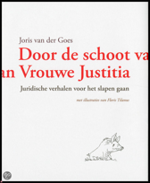

Geef ons heden ons dagelijks brood
"Je kunt zien dat de schrijver begaan is met de mensheid. Het gaat over voldoende voedsel op goede wijze voortgebracht, rekening houdend met dieetveranderingen en het waarborgen van voldoende ruimte voor behoud van biodiversiteit."
Rudy Rabbinge (Hoogleraar landbouw en voedselzekerheid)
Klik & bestel
Door de schoot van Vrouwe Jusitia
De grenzen tussen fantasie en werkelijkheid vervagen als Max door een eigenzinnige leermeester wordt meegenomen op een wonderbaarlijke reis door het lichaam van Vrouwe Justitia. Niets lijkt onmogelijk en gaandeweg wordt Max wegwijs gemaakt in de geheimen van het recht. Slaagt Max uiteindelijk voor de proeve van het meesterschap?
Klik & bestel
